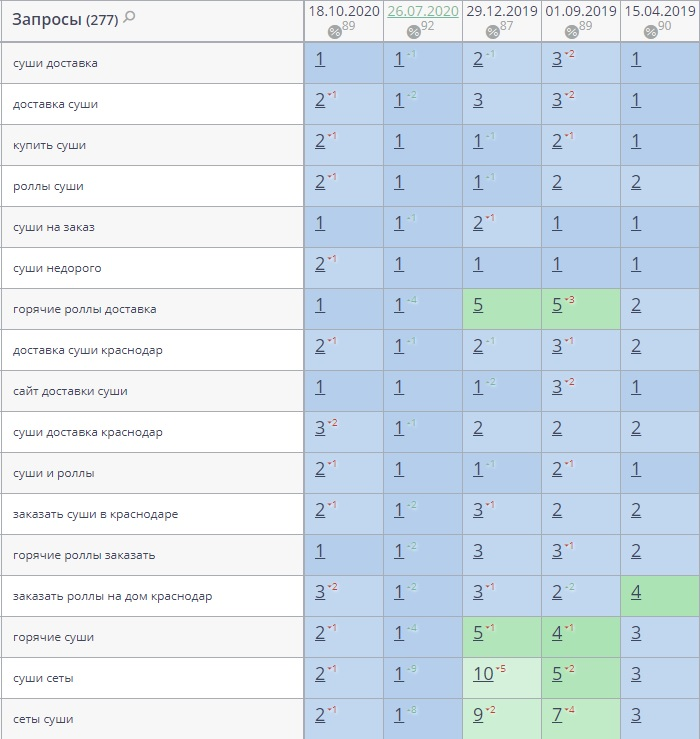

О проекте
Диджитал агентство Nuts Agency сотрудничает с сервисом доставки суши Sushi Fun уже более трех лет. За это время нашей компанией сайт был выведен в топ по всем интересуемым запросам (видимость сайта в поисковых системах Яндекс и Google по 277 запросам ~90%). Кейс по продвижению сайта https://sushifun.ru/ за прошлый год можно посмотреть здесь. В нем мы рассказывали, как вывели сайт в топ поисковой системы Google по большей части запросов.
Однако мало вывести сайт в топ - нужно его там удержать, поскольку конкуренты не спят и также стараются занять свое место на первой странице выдачи. Они работают с оптимизацией, наращивают ссылочную массу, запускают рекламу. Чтобы не потерять позиции и трафик, работа над сайтом должна идти регулярно.
